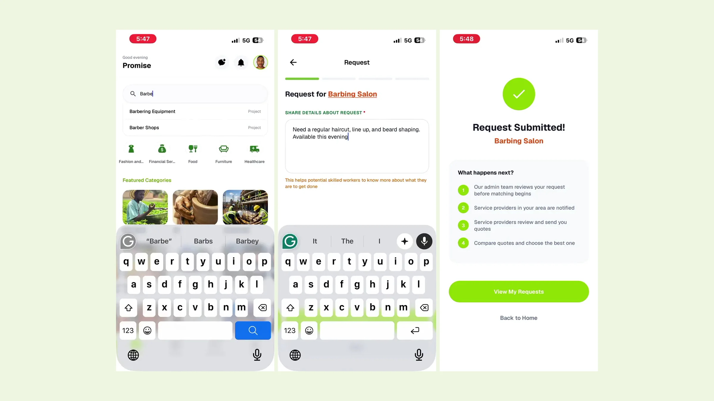
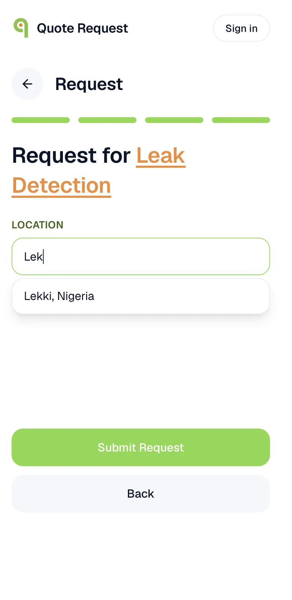
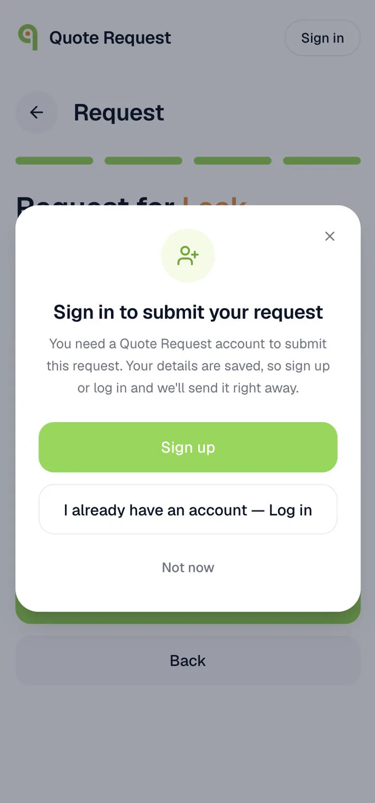
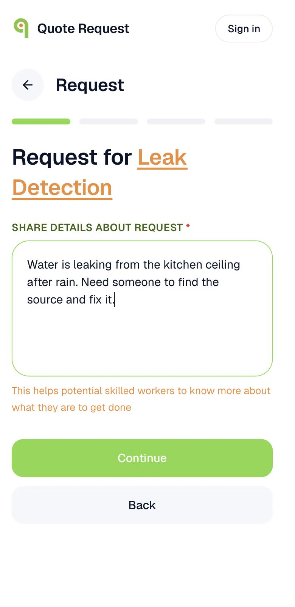
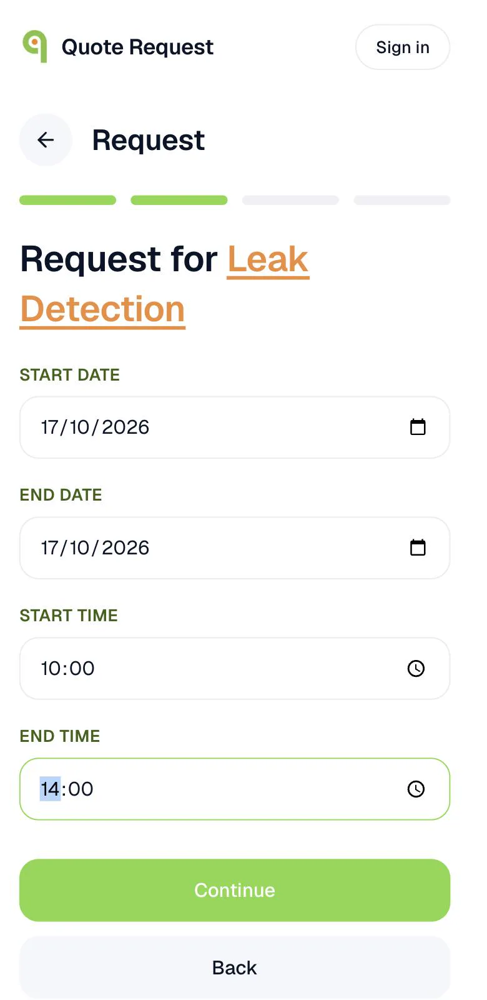
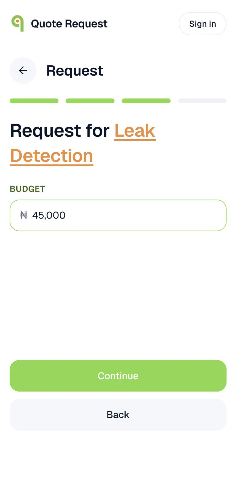

Quote Request: describe a job once, get competing quotes
I designed ConnectNigeria's services marketplace end to end: the customer side and the vendor side, on mobile and web, in two weeks. It launched in November 2025 and has been revised many times since, based on feedback from users and the sales team.

Hiring a plumber in Lagos
shouldn't take ten phone calls.
- Problem: in Nigeria, finding someone to fix a leak, cater an event or install solar usually means asking around on WhatsApp and calling for prices one by one. There is no easy way to compare prices or check who you can trust.
- My part: I was the only designer. I designed the customer app, the vendor app and the web app, working with a PM and three engineers.
- Key decisions: let people write their whole request before asking them to sign up; break the request into four short steps so every vendor quotes on the same facts; make vendor trust visible with a confirmed badge and reviews.
- Result: live on Android, iOS and web since November 2025, with 1,000+ Android installs and a 4.6 rating on Google Play. I'm now running a usability test to get numbers on the request flow itself.
A directory of businesses,
turned into a marketplace.
ConnectNigeria runs one of Nigeria's largest business directories. Quote Request is its newer product: a customer describes a job once, the request goes to confirmed vendors who cover that service and area, and they compete by sending quotes. The customer compares price, timeline and reviews, then picks one.
It's free for customers. Vendors pay for a plan that gives them a number of matched requests per month. Pricing was set by management and the sales lead; I designed how vendors choose a plan, add it to a cart and pay by card or bank transfer, which many small businesses here prefer.
Most of my two weeks went into the mobile app. The web app came second and deliberately mirrors it, so someone who won't install an app (or is on a work laptop) gets the same product in a browser.
Let people ask first.
Ask who they are last.
The business needs an account for every request, to notify vendors and to let them reply. But asking a first-time visitor to sign up before they've typed anything means asking for commitment before they've seen whether the product is worth it.
So guests can go through the whole request. The account question comes only when they tap Submit, and the request is kept: sign up or log in and it is sent straight away. The trade-off is that a guest still can't get quotes without an account, but by that point they have already described their problem, which is the hard part.

A guest reaches the last step without an account. City suggestions keep locations consistent for matching.

The account ask comes at Submit, and it promises the request is saved and sent right after sign-up.
Four small questions,
so every vendor quotes on the same facts.
A vague request gets vague replies, or vendors who just say "call me". A long form gets abandoned on a phone. I split the request into four screens, one question each: what you need, when, your budget in naira, and where. A progress bar shows how close you are, and a line under the first question explains why it matters: it tells vendors what they're being asked to do.
Because every vendor sees the same date, budget and location, their quotes can be compared side by side. Four screens means more taps than one long form, but each one is quick to answer with a thumb.

1 · Describe the job, with a hint on why

2 · When you need it

3 · Budget in naira
4 · Location, with suggestions
You're letting a stranger into your home.
Trust has to be visible.
Every vendor on Quote Request is confirmed, and that confirmation shows as a badge on their listing. A registered business confirms with its CAC number (the Corporate Affairs Commission is Nigeria's company registry), a single field. A business without one can upload its certificate and a director's ID instead. After a job, the customer rates the vendor, and those reviews sit on the vendor's profile next to the quote.
Confirmation adds a step to vendor sign-up, and some vendors will drop out there. That's the right trade: a marketplace where customers don't trust the sellers has no customers for the sellers to reach.
Coverage that matches
how Nigerians describe places.
A cleaner in Lekki and a solar installer who travels across the South West need very different reach. Vendors set coverage zones at the level that fits them: a city or neighbourhood, a whole state, one of Nigeria's six geopolitical regions, or all 36 states and Abuja. One vendor account can also run several businesses and switch between them.
Shipping was the start.
Users and sales did the rest.
ConnectNigeria backed the launch with billboards, an agency and a sales team, and the sales team became one of my best sources of feedback: they talk to vendors every day. Since launch I've revised the product many times based on what users and sales reported. Recent releases improved quote tracking for vendors who run several businesses, made chat more reliable with retries and saved drafts when a message fails, and fixed requests wrongly showing as already answered.
What I'd do differently
We launched without agreeing which numbers would tell us the product was working, so most of what I knew about growth came from stakeholder meetings. Next time I'd sit with the PM before launch and define the funnel (request started, submitted, first quote received, vendor hired) and the events to track it. I'm now testing the request flow with first-time users to put real numbers on the first half of that funnel.